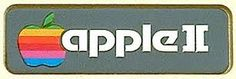
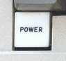
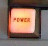
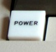
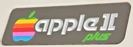
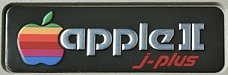
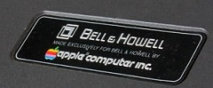

Navigation
C64
Apple ][ Serial Registry
Thanks for visiting the Apple ][ serial registry.
This page is dedicated to keeping track of the Apple ]['s that are still alive and well and in the hands of collectors around the world. Perhaps we can find who has the earliest and the latest serial numbers once and for all?
This data is collected on the 'honor system' so please don't enter false information- that helps nobody!
This page is dedicated to keeping track of the Apple ]['s that are still alive and well and in the hands of collectors around the world. Perhaps we can find who has the earliest and the latest serial numbers once and for all?
This data is collected on the 'honor system' so please don't enter false information- that helps nobody!
| Badge | Keyboard | Case Serial | Board Rev | Board Serial | Owner | Location |
 |  | -33955 | 3 | 7849 | Alessandro Vitale | Italy |
| The numbers on the main board are half deleted, so I assume is 7849 but not sure... | ||||||
 | A2S1-0001 | Rev 0 | Unknown | Unknown | California | |
| According to legend, belonged to Alfred Aya, but was lost when sent into Apple for power supply repair. http://www.swtpc.com/mholley/Apple/allied_computer.htm | ||||||
| A2S1-0002 | Rev 0 | Unknown | Jef Raskin | California | ||
| According to legend, belonged to Michael Holley, and later Jef Raskin after it was sent in for failed power supply repair. http://www.swtpc.com/mholley/Apple/allied_computer.htm | ||||||
| A2S1-0010 | Rev. 0 | 1-178 | Liza Loop | California | ||
| Donated to her by Steve Wozniak. | ||||||
| A2S1-0013 | Rev. 0 | 1-202 | Bob Bishop | California | ||
| Sold on eBay 12/15/15 http://www.ebay.com/itm//351599869741 | ||||||
| A2S1-0025 | Rev. 0 | 1-219 | Achim Baqué | Germany | ||
| White ceramic CPU and white ceramic BIOS. Original unvented case. | ||||||
| A2S1-0047 | Rev 0 | 1-243 | unknown | unknown | ||
| Sold on eBay 6/10/2013 http://www.ebay.com/itm/181152615614 | ||||||
| A2s1-0062 | rev 0 | 1-258 | Dave Donarico | california | ||
| A2S1-0082 | Rev 0 | 1-278 | Unknown | Unknown | ||
| http://www.ebay.com/itm/112570157958 | ||||||
| A2S1-0092 | 0 | 1-294 | Jimmy Grewal | Dubai, United Arab Emirates | ||
| Ventless case, all original components, working. | ||||||
| A2S1-0097 | Rev 0 | 1-299 | Geoff Harrison | |||
| Owned since 1977. http://www.solivant.com/appleII/ | ||||||
| A2S1-0101 | Rev 0 | 1-303 | Howie | |||
| http://s948.photobucket.com/user/epoxy2600/media/Original%201977%20Apple%20II%20Computer/1-AppleIIFront.jpg.html | ||||||
| A2S1-0148 | Rev 0 | 1-356 | unknown | unknown | ||
| Non-Vented case, sold on eBay 7/30/13 http://www.ebay.com/itm/261251962786 | ||||||
| A2S1-0224 | 1-443 | Lighty | ||||
| A2S1-0297 | REV0 | 527 | Musuem of Applied Arts and Sciences | Sydney, Australia | ||
| White ceramic CPU, Original silver power supply serial A2M001- 0141. | ||||||
| A2S1-0369 | Rev 0 | 623 | Dogic | Kansas, USA | ||
| http://dogic.blogspot.com/2006_09_24_archive.html | ||||||
| A2S1-0446 | 0 | 689 | Alex Bush | Shepherd, MI | ||
| Was given to me by my neighbor, who worked in Engineering at Central Michigan University. He got it from a friend who owed him some money back in the late '70s, early '80s. It was originally purchased on September 30th, 1977 by Dr. Russel Morey at Team Electronics in Macomb, IL for $1,257.10. (I retained the original store copy of the sale in the brown carry bag the computer came in.) | ||||||
| A2S1-0463 | Rev 0 | 714 | unknown | unknown | ||
| Seen online. | ||||||
| A2S1-502 | 0 | 720 | Adrian Franulovich | Sydney, Australia | ||
| In Box. Original Roms, PSU, MLB. PSU SN 369 with original toggle switch. | ||||||
| A2S1-0595 | Rev 0 | 859 | Bruce Damer (Digibarn) | |||
| Donated by Mike Olson (was his fathers) http://www.digibarn.com/collections/systems/appleII/ | ||||||
| A2S1-0684 | rev-0 | 2618 | The Apple Museum | Utrecht, the Netherlands | ||
| A2S1-0734 | 0 | 1007 | Poppa Gord | Canada | ||
| Original silver power supply serial A2M001- 0594 | ||||||
| A2S1-0814 | Unknown | 1086 | Unknown | Japan | ||
| https://page.auctions.yahoo.co.jp/jp/auction/v1079780477 Japanese kana keyboard | ||||||
| A2S1-0868 | 0 | 1139 | Sander Schram | The Netherlands | ||
| See classiccomputershop.com for all details. | ||||||
| A2S1-0882 | rev 1 | 6526 | Jesper Alsed | Sweden | ||
| Cracked case. Motherboard not original. | ||||||
| A2S1-0900 | Rev 0 | 1174 | Garry Kitchen | San Francisco Bay Area | ||
| A2S1-0905 | 0 | 1179 | Timothy Colegrove | Boston, MA | ||
| Original power supply, rev. 0 board, Applesoft ROMs. Functional. | ||||||
| A2S1-1024 | Rev 0 | UNKNOWN | UNKNOWN | Finland | ||
| This was lost years ago in storage accident. | ||||||
| A2S1-1101 | Rev 0 | 3188 | C. Pastore | São Paulo - Brazil | ||
| A2S1-1104 | 0 | 1384 | Timothy Colegrove | Boston, MA | ||
| Light green slots, original integer ROMs, original power supply, keyboard, and box. | ||||||
| A2S1-1144 | Rev 0 | 1437 | Michael NG | Hong Kong | ||
| old style power supply with toggle switch | ||||||
| A2S1-1195 | 1478 | vtgearhead | Vermont, USA | |||
| Not about to pull CPU | ||||||
| A2S1-1218 | 0 | 1501 | Larry Pell | Phoenix, Arizona | ||
| A2S1-1298 | Rev 0 | 1579 | unknown | unknown | ||
| Seen online. Metal toggle power supply switch. | ||||||
| A2S1-1472 | 0 | 1742 | Bill W. | US, WA | ||
| Metal toggle switch power supply | ||||||
| A2S1-1491 | 0 | 1760 | Jennifer P. | Atlanta, GA | ||
| Has original metal toggle switch power supply, power supply A2M001-1616. | ||||||
| A2S1-1510 | Rev 0 | 1779 | unknown | unknown | ||
| Seen online. Water damaged, replaced keyboard. | ||||||
| A2S1-1521 | Unknown | Japan | ||||
| https://page.auctions.yahoo.co.jp/auction/l1124157940 | ||||||
| A2S1-1835 | Rev 0 | 2105 | unknown | unknown | ||
| Seen online. | ||||||
| A2S1-1892 | 2162 | Matt Eschbach | Seattle, WA | |||
| Green expansion slots with Modified power supply (also have original) along with "SUP R MOD II" tv interface. Bought at an auction with original manuals and software - along with | ||||||
| A2S1-1916 | Garrett Meiers | Wisconsin | ||||
| Other | A2S1-1962 | Rev 0 | 2234 | unknown | unknown | |
| Seen online. Has been sold on eBay at least 3 times in last 12 months. Missing power light key cap. | ||||||
| A2S1-2006 | Rev 0 | 2278 | Tony Bogan - Former Owner | US | ||
| Went to a good home in the US!! | ||||||
| A2S1-2248 | 2521 | Gary Foote | Maine, USA | |||
| A2S1-2364 | 820-0001-01 | 8260 | Frank Conforti | Pennsylvania, PA | ||
| I bought it in 1977. At the time the case, powersupply and keyboard were backlogged about 4 months so I used the motherboard leaning up against my desk wall. I still own it. Many mods including addition of a fan because it overheated! All 8 slots were filled including a rare RGB-NTSC board that drove a CAT Scan Sony monitor for many years. I turned it on recently and was surprised it beeped! | ||||||
| A2S1-2410 | Rev 0 | 2688 | unknown | unknown | ||
| Seen online. | ||||||
| A2S1-2608 | 1977 | 2886 | Dominik Stepan | Austria | ||
| A2S1-2696 | Rev 0 | 2974 | Unknown | Seen on eBay | ||
| Power supply replaced sometime in the 80's. | ||||||
| A2S1-2733 | Rev. 0 | 3011 | Baril / Lessard | Quebec, Canada | ||
| All is original with silver power supply serial A2M001-2876 | ||||||
| A2S1-3099 | 0 | 3388 | Seen on eBay | |||
| Seen on eBay: https://www.ebay.com/itm/Very-Early-Release-Apple-II-Vintage-Computer/153150335981 | ||||||
| A2S1-3283 | Rev 0 | 5578 | Tony Bogan - Former Owner | US | ||
| This was my older brothers bought new in 1978. A year later he went to college and it became mine!! It too has moved on to a good home. | ||||||
| A2S1-3358 | 0 | 3651 | Jennifer P. | Atlanta, GA | ||
| All original, unmodified. | ||||||
| A2S1-3465 | 3759 | A. Gaw | United States | |||
| The early Apple II Rev 0 Cover Badge you show is not accurate. Let me know if you want a JPG from mine. | ||||||
| A2S1-3505 | 3799 | Andy McFadden | California, USA | |||
| Power supply serial A2M001-3655 | ||||||
| A2S1-3904 | 4199 | Unknown | Japan | |||
| https://page.auctions.yahoo.co.jp/jp/auction/s1071467272 | ||||||
| A2S1-3907 | Rev.0 | 4202 | Unknow | Japan | ||
| Complete except missing Lid, Winchester Light Green Slots. Sold in Japan on 04/25/26 for 400,000 Yen | ||||||
| A2S1-3915 | Rev.0 | Unknown | Unknow | Japan | ||
| Sold in Japan on 05/29/25 Resold in Germany on 07/14/25 for EUR 4,900 https://www.ebay.com/itm/187367476007 | ||||||
| A2S1-3929 | Rev 0 | 4224 | Neil Thayer | Connecticut | ||
| A2S1-4246 | 4542 | J Hughston | Arizona | |||
| Picked up off Facebook Marketplace Nov. 2024. | ||||||
| A2S1-4262 | 7 | 3881 | Devan G | Oklahoma | ||
| Original A2M001-4416 Power Supply, replacement keyboard and Rev7 Motherboard at some point. | ||||||
| A2S1-4292 | 0 | 4588 | Larry Pell | Phoenix, Arizona | ||
| A2S1-4365 | Rev.0 | Unknown | Unknow | Japan | ||
| Sold at Japan auction on 01/17/21 for 199.999 Yen https://auctions.yahoo.co.jp/jp/auction/e492120764/ | ||||||
| A2S1-4714 | Rev. 0 | 4880 | Douglas Ward | Beebe, Arkansas, USA | ||
| Board 4880 contains extra wiring based on an article by Steve Wozniak in Byte magazine about how to add two new colors to the high-resolution graphics. | ||||||
| A2S1-4716 | Rev.0 | 4882 | Darren Young | US | ||
| Power Supply Silver A2M030-22870 | ||||||
| A2S1-4743 | Larry Perkins | Norton Ohio | ||||
| Purchased June 24 1978 Donated to Stark State College in North Canton Oh. Memory board and new power supply installed. | ||||||
| A2S1-4976 | 0 | 5151 | Larry Pell | Phoenix, Arizona | ||
| A2S1-5025 | 0 | 5206 | Mike Maginnis | Denver, CO, USA | ||
| Currently non-functional. Also has a very early Disk II controller and Disk II Drive serial # A2M0003-00562. | ||||||
| A2S1-5468 | 0 | 5764 | Devan G | Oklahoma | ||
| Apple dealer replacement power supply | ||||||
| A2S1-5500 | 0 | 5796 | Jonathan Hunt | Westport, MA | ||
| All original roms, upgraded ram. Original PS SN 5666. Originally purchased by Intertec Data Systems. | ||||||
| A2S1-5807 | Rev 0 | 6118 | Nathan Slingerland | Seattle, WA USA | ||
| Original integer ROMs. Upgraded RAM from 16KB. Original PSU A2M001-5996 dated July 22, 1978. | ||||||
| A2S1-6311 | Rev 1 | 6298 | Jennifer P. | Atlanta, GA | ||
| PSU replaced. All chips date correct. | ||||||
| A2S1-7088 | Rev.1 | 7089 | Paco Moliner | Madrid, Spain | ||
| Applesoft ROMS, PSU Silver # A2M001 - 7943 | ||||||
| A2S1-7500 | 7935 | Howard strokes | Texas | |||
| Date below CPU 1978 | ||||||
| A2S1-7633 | Missing | Missing | Eric Dietrich | Boonton NJ USA | ||
| Was board swapped to a ][+ at some point, has no board at the moment., | ||||||
| A2S1-7745 | Rev.01 | 7756 | Paco M G | Spain EU | ||
| PSU A2M001 Silver/ Autostart ROM/ Applesoft | ||||||
| A2S1-7840 | 7848 | EBay Sale | United States | |||
| EBay Auction https://www.ebay.com/itm/255722075102?mkcid=16&mkevt=1&mkrid=711-127632-2357-0&ssspo=Kmo6-c-dTre&sssrc=2349624&ssuid=pqOryprLTua&var=&widget_ver=artemis&media=COPY | ||||||
| a2s1-07840 | unkn | 7848 | Brad R | New York | ||
| Keyboard usb converted funduino | ||||||
| A2S1-8121 | REV 1 | 8128 | cheribly | 98851 | ||
| A2S1-8226 | Rev.01 | 8233 | Paco MG | Spain EU | ||
| PSU A2M001 Silver/ Integer Basic/ No Autostart ROM | ||||||
| A2S1-8365 | 7839 | Unknown | United States | |||
| http://www.ebay.com/itm/1978-APPLE-II-COMPUTER-FIRST-OF-ITS-KIND-RARE-A2S1-8365-MADE-SEPTEMBER-28-1978/132327416256?ssPageName=STRK%3AMEBIDX%3AIT&_trksid=p2055119.m1438.l2649 | ||||||
| A2S1-8423 | Rev.1 | 7839 | Paco M | Macao | ||
| Power supply A2M030, Corrected keyboard and 78s Applesoft ROMS. | ||||||
| A2S1-8464 | 820-0001-01 | 78-39 | Vernon | New Zealannd | ||
| A2S1-8919 | 7841 | Roland G | San Mateo, CA | |||
| A2S1-9214 | 820-0001-01 | 7842 | Paul Weaver | Wilmington, DE, USA | ||
| Model A2M001. Came with leatherette carrying case and two paddles. Purchased 25 OCT 78 at Compushop 18929 North Central, Dallas, TX 75243 | ||||||
| A2S1-9585 | 820-0001-02 | 7843 | Keith Rose | Ohio | ||
| A2S1-9616 | ROM 1 | Michael Schaffer | Chicago | |||
| A2S1-9706 | 820-0001-01 | 7843 | Timothy Colegrove | Boston, MA | ||
| Original keyboard, silver A2M001-11090 power supply. | ||||||
| A2S1-9812 | 4 | Bernard Tan | Singapore | |||
| The case had no board, so I acquired a rev 4 circuit board and populated the board with the components and Applesoft ROMs. The defective original black keyboard has been replaced with a brown flush power light keyboard. I also acquired a 3rd party power supply. | ||||||
| A2S1-9904 | 2 | 7843 | Jorma Honkanen | Finland | ||
| A2S1-11016 | Rev. 3 | 7846 | Seen on EBay | United States | ||
| Power supply 11701 | ||||||
| A2S1-11181 | rev 2 | 7847 | Jesper Alsed | Sweden | ||
| Most chips are soldered onto the motherboard. | ||||||
| A2S1-11182 | rev 3 | 7847 | Jesper Alsed | Sweden | ||
| This one has rev3 while my serial 11181 has rev 2. | ||||||
| A2S1-11289 | rev 3 | 7848 | Jesper Alsed | Sweden | ||
| PSU 11894 | ||||||
| A2S1-11472 | 820-0001-02 | 7848 | Michael M | California, USA | ||
| A2S1-12167 | ? | ? | Rob Carnegie | Vancouver BC Canada | ||
| A2S1-12180 | 820-0001-03 | 7849 | Jose Ricci | Netherlands | ||
| Bought in 2015 from the original owner in Winnipeg, Canada. | ||||||
| A2S1-12242 | 820-000-02 | 7849 | Daniele Rapillo | Germany | ||
| All original, including box. | ||||||
| A2S1-12276 | 7849 | unknown | Japan | |||
| https://page.auctions.yahoo.co.jp/jp/auction/w196262205 | ||||||
| A2S1-12458 | Garrett Meiers | Wisconsin | ||||
| A2S1-12989 | Rev 4 | 4 | Unknown | |||
| Not original motherboard. Motherboard serial is just "4" | ||||||
| A2S1-13176 | 820-0001-03 | 7849 | Dave Evans | Silicon Valley | ||
| A2S1-13249 | 820-0001-03 | 7849 | unknown | United States | ||
| http://www.ebay.com/itm/1978-Apple-II-Computer-not-2-plus-or-2e-Apple-Vintage-Collectors-item-/222644466601?hash=item33d6a4f3a9:g:CRkAAOSw8HBZNmhz | ||||||
| A2S1-13319 | 820-0001-03 | 7850 | Guy Glover | Virginia U.S. | ||
| Was approved for use on U.S.S. John F. Kennedy CV-67 on 22 March 1979. | ||||||
| A2S1-14196 | 4 | 7901 | Jeff Geerling | St. Louis, MO USA | ||
| It was my Uncle's Apple ][ which he purchased and learned computing on with my Dad. Someday I'll feature it in a video on my YouTube channel :) | ||||||
| A2S1-14230 | Rev.2 | 7901 | Adrian Black | Portland OR | ||
| Integer Basic ROMs, Power Supply: Replaced for a more nodern mod.605-5703, Lowercase Mod. | ||||||
 | A2S1-14815 | 3 | 7902 | Adrian Tilley | Brisbane, Australia. | |
| A2S1-15048 | rev 3 | 7905 | Jesper Alsed | Sweden | ||
| A2S1-15305 | Gene Dery | Mission Viejo, CA, USA | ||||
| A2S1-15505 | rev 3 | 7911 | Jesper Alsed | Sweden | ||
| A2S1-15533 | Unknown | 7903 | Unknown | United States | ||
| A2S1-15564 | 820-0001-03 | 7903 | John Han | IL | ||
| A2S1-16638 | 820-0001-03 | 7904 | Atsushi USHIRODA | Japan | ||
| A2S1-16705 | 3 | 7904 | unknown | |||
| A2S1-16784 | -04 | 8068 | Randolph Byrnes | Pittsburgh, PA | ||
| Pictures listed in my computer museum at: www.myoldcomputers.com | ||||||
| A2S1-16797 | Rev 02 | 7904 | Brad H | Canada | ||
| Has Japanese characters on keys. | ||||||
| A2S1-16981 | 3 | 7905 | Leif Sawyer | Anchorage, AK | ||
| Currently non-working; need replacement ROM chips | ||||||
| A2S1-17250 | 820-000-03 | 7905 | Daniele Rapillo | Germany | ||
| Originally bought in Kansas City MO, has original receipt and all repair and expansions history. PSU failed in '87 and has been swapped. | ||||||
| A2S1-17385 | Rev 3 | 7906 | Jennifer P. | Atlanta, GA | ||
| Original box, ROM card with appropriately dated ROMs. | ||||||
| A2S1-18246 | Unknown | Japan | ||||
| https://page.auctions.yahoo.co.jp/jp/auction/r1093661611 | ||||||
| A2S1-18726 | 820-0001-02 (Rev 2) | 7907 | Santek Tihomir | Croatia | ||
| All original parts inside except the power supply that has been changed in the meantime. | ||||||
| A2S1-18977 | 2 | 7907 | Unknown | |||
| http://www.ebay.com/itm/172089465781 | ||||||
| A2S1-20620 | 820-0001-03 | 7909 | Lynn Markley II | Colorado Springs, CO | ||
| A2S1-20958 | 820-0001-03 | 7909 | Rafi Kalustian | Houston TX | ||
| Fully functional, except for few unresponsive keys. Power supply s/n ASM0030 - 34893 | ||||||
| A2S1-21045 | 4 | 7909 | william G. | N.Y USA | ||
| power supply serial #: A2M001-34149 | ||||||
| A2S1-21273 | 7909 | Jimmy Grewal | Dubai, United Arab Emirates | |||
| A2S1-21911 | 820-0001-03 | 7910 | Daniel Leverett | Atlanta, Georgia, USA | ||
| Power Supply : A2M001-18750. Second owner? | ||||||
| A2S1-22303 | 820-0001-003 | 7911 | Jim Perry | Fort Worth, TX | ||
| A2S1-23550 | 03 | 7913 | Eric Johanson | New Hampshire, USA | ||
| Fully functional, silver PSU #38611, original integer ROMS. | ||||||
| A2S1-24456 | 820-0001-04 | 7917 | Eric L | Paris, France | ||
| First owner. Original ROMs have been swaped for Autostart F8 ROM and Applesoft ROM. PSU : ASTEC BP4351 110/230 V | ||||||
| A2S1-24703 | 820-0001-03 | 7915 | Boyd B. | Texas | ||
| Original and only owner. | ||||||
| A2S1-24826 | 19 82 | Tadfafty | Oregon | |||
| Language card, serial interface card, Disc ][ interface card, Micro-SCI A2 drive and Disc ][ drive. A code written on the motherboard says 606-X-548. Power supply A2M001-35114. I can't get the chip off to see the board revision number. | ||||||
| A2S1-24884 | Rev 4 | 7925 | Joel McWilliams | Texas | ||
| A2M001 PSU, Integer ROMs | ||||||
| A2S1-25422 | 820-0001-03 | 7916 | MarkO | Albany, Oregon USA | ||
| Case Serial Number, Power Supply Serial Number and Board Serial/Batch Number seem ALL Original, compared with similar era units. Has Astec 115/230 VAC Power Supply, with Apple Label A2M001 - 35828, with the 001 overwritten in Sharpie with 030. A2M030 is the part number of 115/230 VAC Power Supplies. | ||||||
| A2S1-25623 | 8044 | Huxley Dunsany | California | |||
| Very interesting machine! Has a handwritten date sticker in the rear-left of the motherboard reading "8044," and a small modification in the form of a tiny toggle-switch mounted in one of the underside air vents, which appears to be a mute switch for the internal speaker | ||||||
| A2S1-26143 | Rev 4 | 7933 | Joel McWilliams | Texas | ||
| A2M001 PSU, Integer ROMs | ||||||
| A2S1-26354 | 820-0001-03 | 7913 | Lukas H | Upper Austria | ||
| Perfekt condition, working, | ||||||
| A2S1-27590 | 4 | 7920 | Dean Claxton | Brisbane, Australia | ||
| Integer Basic ROM's, Autostart F8 on 16k language card | ||||||
| A2S1-29029 | 4 | 8015 | Steve H | Iowa | ||
| Keyboard is original, but original board and power supply was pulled to repair another computer back in the mid/late 80s | ||||||
| A2S1-30606 | 7927 | jaxermd | Maryland | |||
| Machine is totally intact, has the keyboard with the Basic commands on the front of the keys. | ||||||
| A2S1-31686 | 7930 | Robert Cherubini | PA, USA | |||
| Board Revision location? Unit power light comes on when switched on. Have not yet connected it to a monitor. | ||||||
| A2S1-32090 | 7931 | Dillon Hanly | USA | |||
| A2S1-33414 | Rev 4 | 5082 | BitHistory.org | Appleton, WI | ||
| A2S1-33606 | Rev 4 | 7935 | Matthew E. D'Asaro | Seattle, WA | ||
| I bought it on eBay in 12/2020. According to the seller it was found at an estate sale near Gardner, Massachusetts. It has the original silver power supply, original motherboard, original keyboard, etc, but has been upgraded to Applesoft ROMS. I am looking for original integer ROMS to put it back to stock configuration. The marking on the motherboard is interesting in that it has the usual date code ("7935" in this case) applied with a stamp instead of a pen, but then below that the numeral "4" is written with pen. | ||||||
| A2S1-33630 | 4 | 7938 | Paul Hagstrom | Boston, MA | ||
| Kind of guessing on power light style, since it's loose. | ||||||
| A2S1-34275 | 4 | 7939 | Paul Weaver | Wilmington DE | ||
| A2S1-35245 | 820-0001-04 | 7941 | Ed Morana | Livermore, CA | ||
| A2S1-36180 | 7946 | Mark | Maryland | |||
| A2S1-36222 | REV | 7945 | Ken Gladstone | Ventura County, CA | ||
| The board number actually appears to be "7945+". Also, "REV" is clearly visible as embedded board trace routing, but whatever is after the word "REV" is hidden under one of the expansion slots. On the opposite site of the CPU, white silkscreen says"6502" (the chip), and "Apple Computer Inc." | ||||||
| A2S1-36541 | Rev 4 | 7943 | Tony Bogan - Former Owner | US | ||
| There is an X below the Mobo datecode. This now resides with a happy Apple II collector! | ||||||
| A2S1-37607 | 548 | 8242 | David Clark | Brookline, MA USA | ||
| I'm assuming that the Board Revision number is the black stamped 548 on a rectangular white patch of the motherboard above the expansion slots. It's preceded by 606-X. | ||||||
| A2S1-38495 | Rev 04 | 7949 | Brad H | Canada | ||
| Not the original board but believed to be correct based on serial number. | ||||||
| A2S1-38725 | 7949 | Wiroonsak Poonlarp | Thailand | |||
| A2S1-39461 | 8004 | Pete Rittwage | Augusta, GA, USA | |||
| Has University of North Carolina property/inventory sticker. | ||||||
| A2S1-39751 | Originally Maurice Piroumian | Woodstock, Georgia | ||||
| Found at estate sale and previously owned by Maurice Piroumian, an electrical engineer for NASA's Caltech Jet Propulsion Laboratory who worked on the Ranger and Mariner projects. He later worked for Hughes Aircraft Company | ||||||
| A2S1-39988 | 820 0001 04 | 8005 | Chuck Benton | Nobleboro, ME | ||
| Used to develop source code for Softporn Adventure. Online System's Frogger for Atari 800 and C64 and others | ||||||
| A2s1-40209 | Revision 4 | 8005 | Jay Graham | Butler, Pennsylvania | ||
| Has Integer BASIC card in it and one 5.25" diskette drive with rainbow cable. I am the second owner and have the original sales receipt from MicrosAge back in 1980 | ||||||
| A2S1-62707 | Rev 4 | smeared off | Mick Sybal | Connecticut, USAA2S1 | ||
| Integer Roms with 1978 date codes Other ics from 79 mixed | ||||||
| a2s1-65515 | 04 | 8020 | Eric Bertrand | Quebec, Canada | ||
| It have Integer basic romset and 48k ram + a 32K Saturn ram card. | ||||||
| A2S1 -65646 | 8020 | Demetrios Bitsas | Buffalo NY | |||
| Original box with serial number on the box and foam inserts. Included both disk drives and boxes. Purchased at antique mall. Original owner lived in orchard park. | ||||||
| A2S1-66227 | 4 | 8023 | Chris Courtney | Illinois, USA | ||
| A2S1-66838 | 7 | 8029 | Paul Hagstrom | Boston, MA | ||
| red label style | ||||||
| A2S1-67188 | 8031 | Unknown | California | |||
| Found on eBay: https://www.ebay.com/itm/394555830484 | ||||||
| A2S1-71428 | 820-0001-04 | 7919 | Nick Madden | Fitchburg, MA | ||
| A2S1-78917 | 820-0044 C | David E. Whiteis | Germantown, Maryland | |||
| A2S1--0003 | rev.0 | unable to find | mitsaras o gigantas | ilia,greece | ||
| imported to greece from america in the air force, currently in my personal museum | ||||||
| a2s2-01511 | 820-0001-04 | 7928 | stefan westrin | sweden | ||
| A2S2-22521 | ? | ? | Eric / The Computera Collection | Gatineau, QC, Canada | ||
| A2S2-79985 | 7 | 8028 | Paul Hagstrom | Boston, MA | ||
| Came with a standard II badge, key-style power light. Somewhat mismatched as received. | ||||||
| A2S2-101011 | 820-0001-01 | 7294 | MarkO | Albany, Oregon USA | ||
| Obviously not original Motherboard. | ||||||
| A2S2-207621 | 820-0001-07 | 8050 | Paolo F.sco Lenti | Italy | ||
| PSU Astec s/n A2M0030-150206 repaired and recapped, motherboard repaired, now fully functional. I think that the chassis (and the serial) is from another Apple II (Plus?). | ||||||
 | A2S1-3004 | RFI | 8114 | Rob Ivy | Texas, USA | |
| This Apple II started life as an early Apple II serial #3004, but was "upgraded" to a II Plus sometime around '81. The lid/badge and logic board were exchanged with A2+ parts. This machine is currently being restored to it's original rev 0 Apple II configuration. | ||||||
| A2S1-26480 | 820-0001-03 | 7917 | Arthur Ferreira | France, Paris | ||
| Inherited from its first owner André Finot, a french developer (Apple Lena 1). It has a RF modulator soldered on the motherboard but uses a rarissime ISTC Couleur RVB81 SCART (SECAM) adapter in slot 7 as main video output. The power supply is an ASTEC 115/230V Model AA11040. Seems like an early Apple ][ plus made from an Apple ][ surplus for the European market. | ||||||
| A2S1-29395 | 3 | 7923 | Didier B | AUCH (France) | ||
| Probably Apple ][ upgraded to Europlus | ||||||
| A2S2-00185 | Rev.3 | 7925 | Paco MG | Spain EU | ||
| A2M001 Silver Power Supply, Applesoft ROMS | ||||||
| a2s2-00991 | Dont have a chip puller | 7926 | Brad R | New York | ||
| Seems to be first weeks of production of Apple Plus. Has raised power key KB. Don't know if this is was a retro fit KB at some point. Earliest apple II plus I have come across | ||||||
| A2S2-1234 | REV.4 | unreadable | Kaleun-Software | |||
| Early A2 in germany works well i own this Apple over 30 years and works well | ||||||
| A2S2-02193 | 04 | 7929 | Anonymous | TX | ||
| Early Rev 4 w/ soldered memory select blocks. A2M001 PS #49558. | ||||||
| A2S2-02200 | Nathan Slingerland | Seattle, WA | ||||
| A2S2-4068 | Rev 4 | 7933 | Tony Bogan - Former Owner | US | ||
| This one has beautiful matching Purple Ceramic gold top RAM and Character ROM | ||||||
| A2S2-04683 | 7934 | Mai Zhou | Kentucky, USA | |||
| Power supply serial # A2M030 - 63874 | ||||||
| A2S2-05105 | 820-0001-04 | faded | Eric Jacobs | California | ||
| Board copyright is 1978; original box shipping date is Sept 10, 1979; CPU date code 7908; all ROMs are date coded for 1978; soldered memory select blocks; | ||||||
| a2s2-5148 | 820-0001-04 | 7935 | Joseph srour | brooklyn ny | ||
| soldered memory blocks, all original. Cant get unit to boot into basic stays on APPLE ][ screen help! unit has rev 4 motherboard dated 7935 | ||||||
| A2S2-06759 | 820-0001-04 | Jeff | France | |||
| A2S2-07273 | Rev 4 | 7940 | Tony Bogan - Current Owner! | New Jersey | ||
| This one has a cool video mod with a homemade 80 column card. Also, it has a rev 4 board, but with socketed ram select blocks. All other rev 4s I've seen have soldered ram blocks. | ||||||
| A2S2-08139 | Rev 4 | unreadable | Tony Bogan - Former Owner | US | ||
| Went to a good home somewhere in the US | ||||||
| A2S2-8381 | Rev 4 | 7940 | Tony Bogan - Former Owner | US | ||
| Went to a good home in the USA | ||||||
| A2S2-10087 | 4 | 7941 | Paul Hagstrom | Boston, MA | ||
| A2S2-11134 | 4 | 8001 | Paul Hagstrom | Boston, MA | ||
| A2S2-12313 | 820-0001-04 | 7944 | Jorma Honkanen | Finland | ||
| No keyboard. Power supply AA11040. Two wires under the board to slot #7. | ||||||
| A2S2-14909 | Rev 4 | 7946 | Tony Bogan - Former Owner | US | ||
| Beautiful, near pristine condition with original matching S/N Box and packing. Went to a good home! | ||||||
| A2S2-15435 | 820-0001-04 | 7949 | Arthur Ferreira | France, Paris | ||
| The Motherboard has 2 long wires at the back running from slot 7 to ICs in B10 and B11. PSU model A2M001 with 03 hand written over the 01- serial #54146 - a sticker '230V ONLY' is applied where you usually had the 130/230V switch. | ||||||
| A2S2-16974 | 821-0001-04 | 7946 | Peter Rittwage | Augusta, GA USA | ||
| A2S2-17497 | 4 | 8021 | Mike Maginnis | Denver, CO | ||
| 16K Memory Select Jumper Blocks (soldered) | ||||||
| A2S2-17818 | 7952 | Don | Vanvouver, Canada | |||
| Touched by Steve Wozniak during Pacific Coast Computer Fair in Vancouver, BC prior to him speaking at the conference. | ||||||
| A2S2-18186 | 4 | 8CEY | Doug Dougherty | Oregon | ||
| Purchased to develop TV election returns program. Used on-air driving Chyron 4 CG from 1980 to 1988 in San Diego. Setup includes 2 FDD, 2 Micromax 80 col cards, Apple language card, SuperSerial card, Apple serial card, parallel card, Mtn Hardware Apple Clock, Hayes Micromodem, TV timecode reader card, game paddles, and a huge suitcase-size case to make it all portable. | ||||||
| A2S2-18550 | Rev 4 | 8001 | Tony Bogan - Former Owner | US | ||
| A2S2-19020 | 820-0001-04 | 8024 | Brad H | Squamish, Canada | ||
| This one was reconstituted from parts - I put a black slot Rev 04 in it assuming that was probably what it originally had. | ||||||
| A2S2-19087 | RFI | 2782 | Jennifer P. | Atlanta, GA | ||
| Motherboard replaced at some point in time. | ||||||
| A2S2-19386 | 820-0001-04 | 8001 | Unknown | Germany | ||
| Has the the earlier smaller green on white IIplus sticker | ||||||
| A2S2-19970 | 820-0001-04 | 8002 | Jorma Honkanen | Finland | ||
| A2S2-20719 | REV 4 | 8025 | Arn Kanters | Netherlands | ||
| It is a PAL & 230v computer. but it was made in the USA and the badge says it is a "plus" not an "europlus" Possibly an early european model of someone has swapped some parts | ||||||
| A2S2-24799 | 820-0001-04 | 8011 | Jorma Honkanen | Finland | ||
| A2S2-25382 | 820-0001-07 | 8041 | Jorma Honkanen | Finland | ||
| A2S2-26508 | 820-0001-04 | 8016 | Arthur Ferreira | France, Paris | ||
| Still has slot 7 covered by a sticker telling : "this slot only for euro color pal/secam card do not use for any other card !" PSU serial # A2M0030- 020605 (230V ONLY) | ||||||
| A2S2-65552 | 4 | 8001 | Nathan Slingerland | Seattle, WA USA | ||
| A2S2-68502 | 4 | 8009 | William Barnes | Nashville, TN | ||
| A2S2-68890 | Rev 4 | 8010 | Jennifer P. | Atlanta, GA | ||
| A2S2- 77501 | Murray | New Zealand | ||||
| A251048 serial a2s2 77501 | ||||||
| A2S2-77656 | 4 | 8013 | John Laughlin | Duvall, WA, USA | ||
| A2S2-80380 | Greenthirteen | Pennsylvania | ||||
| A2S2-83556 | 4 | STEPHEN BROWN | Ontario, Canada | |||
| A2S2-84155 | RFI - 820-00440-D | 8518 | Tony Bogan - Former Owner | US | ||
| MOBO was a replacement from the original. | ||||||
| A2S2-84904 | 4 | 8025 | Lars Schenk | Germany | ||
| More information and photos can be found here: https://www.facebook.com/media/set/?set=a.10208060362860324.1073741841.1636927119&type=1&l=bbc5bb53d7 | ||||||
| A2S2-88415 | 820-0001-0 | 8030 or 8038 cant tell | Mick Sybal | 06776 | ||
| Unit came with the original books/manuals and brown leatherette apple carry bag, has seen water damage as the books and bag have mildew damage. Books could not be saved. Bag washed out fine, computer was cleaned, board needs a cleaning and there is a missing burned tantalum capacitor. As of now the pc boots to horizontal bars. Will repair when I have time. | ||||||
| A2S2-95766 | 4 | 8018 | Jeff Ramsey | Morton, WA | ||
| The REV4 was stamped into the board above the CPU socket, not underneath the CPU, if that makes any difference. | ||||||
| A2S2-96667 | 820-0001-07 | 8034 | John Bonewitz | Hawai'i | ||
| A2S2-102700 | 820-0001-07 | 8042 | Paul Weaver | Wilmington, DE, USA | ||
| Model A2S1032 | ||||||
| A2S2-102856 | 820-0001-07 | 8042 | Michael Hinz | Tromsø, Norway | ||
| Converted to europlus, but maybe no color. Never used it with anything else than a green composite monitor, so I don't know. | ||||||
| A2S2-109228 | RFI - 820-0044-C | only 82 is visible | Tony Bogan - Former Owner | US | ||
| Went to a good home! | ||||||
| A2S2-109874 | 7 | 8038 | Paul Hagstrom | Boston, MA | ||
| A2S2-111102 | TBD | TBD | Carlos | Midwest | ||
| Previous owner was an Engineering Manager at Apple from 1980-1995. Set includes original brown leather bag with "unbit" apple logo, all hardware accessories and over 75 games and programs with most in original packaging and with manuals. | ||||||
| A2S2-113209 | 8142 | Wayne Bibbens | Elbridge, New York USA | |||
| "48K" sticker still on spacebar. Has Language card installed. Still in "new" appearance condition. | ||||||
| A2S2-119321 | 821-0001-07 | 8036 | Peter Rittwage | Augusta, GA USA | ||
| Power light is missing the word "power". It's just blank. | ||||||
| A2S2-121784 | 820-0044-D | 1682 | Drumond de Melo | Montreal, QC, Canada | ||
| Bought in Jan/2023 on ebay, previous location was Waukesha, WI. Had an yellowed tag stating need of repairs. Keyboard still had the 48K sticker on the spacebar. Apparently was stored unused for a long time. Case in good condition. Transistors Q3 and Q6 and all DRAM chips changed, restored to full working condition. | ||||||
| A2S2-125950 | RFI 820-0044-01 | 8106 | Paul Hagstrom | Boston, MA | ||
| D8106 marked | ||||||
| A2S2-151907 | Rev 7 | 8103 | Mike Maginnis | Denver, CO | ||
| A2S2-168991 | 820-0044-00 | lowlevel | Kitchener, ON CANADA | |||
| 820-0044-00 under CPU 820-0044-01 on left side of board. | ||||||
| A2S2-173808 | 8114 | Wil Druk | Salt Lake City, Utah | |||
| A2S2-178728 | RFI - 820-0044-01 | 8116 | Tony Bogan - Former Owner | US | ||
| An early RFI Board. Internals in good shape, case a bit marked up. | ||||||
| A2S2-213656 | RFI | Trevor Gipson | Rocklin, CA | |||
| I had the motherboard and patent schematic from the back of Apple II Manual professional framed and it hangs in my office. It was all done carefully to preserve the machine and I keep the case and safe and sound at home. :) | ||||||
| A2S2-223385 | RFI | 8123 | Tony Bogan - Former Owner | US | ||
| In extremely good condition | ||||||
| A2S2-231282 | Alex Pasheyev | Omaha, NE | ||||
| A2S2-233797 | 820-0044-C | 8131 | Craig A | New Orleans, LA | ||
| A2S2-234929 | C | 8133 | mmphosis | |||
| A2S2-247248 | 820-0001-07 | 8014 | Jorma Honkanen | Finland | ||
| A2S2-248883 | Wayne M. | Maryland USA | ||||
| A2S2-266673 | 820-0044-C | 8135 | Chris Torrence | Colorado | ||
| Board was replaced around 1983; I'm the original owner; came as part of the Apple II Family System | ||||||
| A2S2-273520 | 8127 | Michael Welch | Dallas, TX | |||
| A2S2-301287 | 820-0044-D | 5081 | Arthur Ferreira | France, Paris | ||
| power Supply model 605-5703 serial #825943 | ||||||
| A2S2-360723 | 820-0044-C | 1082 | Paul Weaver | WIlmington, DE | ||
| A2S2-371930 | RFI | 1282 | Paul Hagstrom | Boston, MA | ||
| My photos aren't great, not 100% certain of board date or specific RFI revision. | ||||||
| A2S2-389734 | Jacob J | Usa | ||||
| A2S2-401502 | 820-0044-C | 8218 | Philippe Van Lieu | Roseville, CA | ||
| Still working fine after all these years! | ||||||
| A2S2-412783 | RFI -D | 1782 | Paul Hagstrom | Boston, MA | ||
| A2S2-417534 | RFI -D | 1982 | Paul Hagstrom | Boston, MA | ||
| A2S2-420888 | 820-0044-D | 2082 | Juan Rivas | Colombia | ||
| Restored, working perfectly. | ||||||
| A2S2- 434940 | RFI 820-0044-D | 1782 | Paco MG | Madrid, Spain | ||
| A2S2-436776 | Gani | NC, USA | ||||
| a2s2-452780 | MVB | USA | ||||
| A2S2-459992 | RFI -D | 2882 | Paul Hagstrom | Boston, MA | ||
| A2S2-472404 | ? | 3682 | Andrew E. | Texas | ||
| A2S2-542439 | RFI | 4682 | Paul Hagstrom | Boston, MA | ||
| A2S2-556144 | 820-0044-D | 0283 | Logan Greer | Fresno, California | ||
| It’s in MINT condition! | ||||||
| A2S2-575950 | RFI - 820-00440-D | 8248 | Mike Maginnis | Denver, CO | ||
| A2S2-588366 | 820-0044-D | 0583 | Brad H | Squamish, Canada | ||
| A2S2-588978 | Wayne M. | Maryland | ||||
| A2S2-615450 | 820-0001-07 | 8104 | Peter Eggimann | Switzerland | ||
| A2S2-619459 | 8018 | John Forbes | Kent UK | |||
| A2S2-1491064 | 07 | 8038 | Will C. | Paradise, TX | ||
| IA2S2-500004 | 820-0044-D | 8233 | John Cole | Alberta, Canada | ||
| 1A2S2-660915 | 428 | Bernard Tan | Singapore | |||
| A2S1-13359 | 820-0001-03 | 7850 | Didier B | France | ||
| Standard Apple ][ modified in Euromod before Europlus came out. Stickers Euro 16K on spacebar. Later, ROM swapped and upgraded to 48K. | ||||||
| A2S2-29471 | 4 | 8005 | Jorma Honkanen | Vantaa, Finland | ||
| Serial is from Plus, but modified to Europlus. Slot 7 have sticker on side "This Slot Only For Euro Color PAL/SECAM card. Do no use any other card!" | ||||||
| A2S2-29927 | 820-0001-04 | 8020 | Robert Brehaut | Guernsey | ||
| A2S2-33377 | 820-0001-07 | 8029 | Owen Buchet | France | ||
| A2S2-37859 | 820-0001-07 | 8033 | Jorma Honkanen | Finland | ||
| Apple II+ serial, label is Europlus. | ||||||
| A2S2-38420 | 820-0001-07 | 8025 | Jorma Honkanen | Finland | ||
| IA2S2-608839 | 820-0044-C | 8150 | Jorma Honkanen | Finland | ||
| IA2S2-610547 | 820-0001-07 | 8101 | Matthias W. | Germany | ||
| IA2S2-611354 | 820-0001-07 | 8103 | Jorma Honkanen | Finland | ||
| IA2S2-626529 | 825-0187-00 | Apple II europlus | Color | |||
| IA2S2-642852 | 3581 | Martin Smith | Torquay, United Kingdom | |||
| IA2S2-655155 | 820-0044-C | 8127 | Didier B | France | ||
| IA2S2-655457 | 820-0044-D | 8301 | Jorma Honkanen | Finland | ||
| IA2S2-681042 | 8230 | Martin Smith | Torquay, United Kingdom | |||
| IA2S2-681127 | 8134 | Paul Hagstrom | Boston, MA | |||
| photo insufficient to determine revision. RFI likely. | ||||||
| IA2S2-693030 | 820-0044-D | 8302 | Jorma Honkanen | Finland | ||
| IA2S2-707182 | Ron | USA | ||||
| IA2S2-715008 | 820-0044-D | 0183 | Juha Seppänen | Finland | ||
| Power light is raised square but the POWER text has probably worn out. | ||||||
 | A2S1-103568 | Hans Franke | Bavaria | |||
| A2S2-58664 | Luca R. | Italy | ||||
 | A2S1-2288 | 04 | 8020 | John M Holmes | Wichita, Kansas | |
| A2S3-115 | Rev 4 | 7922 | cheribly | USA | ||
| A2S3-000329 | 04 | 7934 | Michael Schaffer | Mid-west | ||
| Located in Indiana, | ||||||
| A2S3-000337 | 4 | 7934 | John Han | USA | ||
| A2S3-000431 | 4 | 7935 | Paul Hagstrom | Boston, MA | ||
| Originally Peter Olivieri's machine. | ||||||
| A2S3-000977 | 4 | None | BJP | Nashville | ||
| Owned by Bell & Howell employee, possibly internal company use or manufacturing prototype. Has silver phono-style jacks on side where dual DIN jacks are typically located. Factory sprayed, not black plastic. 48K silkscreen on badge, and on game ports. Single B&H sticker on underside. | ||||||
| A2S3-1838 | Rev 4 | 7935 | cheribly | USA | ||
| A2S3-1867 | Rev 4 | 7935 | cheribly | USA | ||
| A2S3-2651 | 820-0001-07 | 8028 | cheribly | USA | ||
| A2S3-2884 | 820-0001-07 | 8030 | cheribly | USA | ||
| A2S3-005842 | 820-0044-C | 8123 | Brad H | Squamish, Canada | ||
| A2S3-6517 | 820-0001-07 | cheribly | USA | |||
| 48K with Backpack has Paddle ports in the side. | ||||||
| A2S3-007001 | 820-0044-C | 8137 | Paul A | Boston, MA | ||
| A2S3-007432 | Don't know | not readable | ESoCoP European Society for Computer Preservation | Switzerland | ||
| A2S3-009040 | Peter Weilnau | Pennsylvania | ||||
| A2S3-9394 | Rev 7 | 8122 | Jennifer P. | Atlanta, GA | ||
| Bell & Howell Apple II+ | ||||||
| A2S3-10216 | 820-0001-07 | 8101 | cheribly | USA | ||
| A2S3-11318 | 820-0044-D | 8121 | cheribly | USA | ||
| 48K with Backpack has Paddle ports in the side. | ||||||
| A2S3-011372 | 820-0044-C | D 8127, w/ 27 crossed out, 33 overwritten in red marker | BJP | Nashville | ||
| Gold power supply 605-5703, s/n 731511 | ||||||
| A2S3-011472 | 8138 | Paul Hagstrom | Boston, MA | |||
| D8138. B&H model 3048D, s/n 1278033. Can't read board revision in photo, probably RFI something. | ||||||
| A2S3-11895 | 820-0044-D | 8133 | cheribly | USA | ||
| A2S3-15264 | 820-0044-C | 8125 | cheribly | USA | ||
| Backpack & has Paddle ports in the side. | ||||||
| A2S3-15353 | 820-0044-C | 8147 | cheribly | USA | ||
| 48K with Backpack has Paddle ports in the side. | ||||||
| A2S3-15894 | 820-0044-D | 8217 | cheribly | USA | ||
| A2S3-16190 | 820-0044-D | 8212 | cheribly | USA | ||
| 48K | ||||||
| A2S3-17280 | 820-0044-C | 8138 | cheribly | USA | ||
| A2S3-22707 | 820-0044-C | 8128 | cheribly | USA | ||
| Backpack has been removed & has Paddle ports in the side. | ||||||
| A2S3-22721 | 820-0044-D | 8202 | cheribly | USA | ||
| A2S3-24213 | 820-0044-D | 8220 | cheribly | USA | ||
| A2S3-24522 | 820-0044-D | 8218 | cheribly | USA | ||
| Backpack & has Paddle ports in the side. | ||||||
| A2S3-26596 | 820-0044-C | 8128 | cheribly | USA | ||
| Backpack has been remove & has Paddle ports in the side. | ||||||
| A2S3-26824 | 820-0044-D | 8215 | cheribly | USA | ||
| A2S3-027098 | Michael M | California, USA | ||||
| A2S3-029600 | Garrett Meiers | Wisconsin | ||||
| Includes backpack. | ||||||
| A2S3-029936 | 820-0044-D | 2282 | eBay Auction | United States | ||
| eBay item, https://www.ebay.com/itm/195284633902?mkcid=16&mkevt=1&mkrid=711-127632-2357-0&ssspo=Nh4rEQF6SB6&sssrc=2047675&ssuid=&widget_ver=artemis&media=COPY | ||||||
| A2S3-30390 | 820-0044-D | 8235 | cheribly | USA | ||
| Backpack with joystick ports on the side. | ||||||
| A2S3-30432 | 820-0044-D | 8234 | cheribly | USA | ||
| Audiovisual Backpack & Paddle Ports | ||||||
| A2S3-34388 | 820-0044-D | 8244 | cheribly | USA | ||
| a2s3-034578 | 4482 | David Miller | Florida | |||
| A2S3-34853 | 820-0044-D | 8303 | cheribly | USA | ||
| A2S3-035776 | 820-0044-D | 0483 | Jorma Honkanen | Finland | ||
| With backpack | ||||||
| Other | AS23 -003843 | 820-0001-07 | 8034 | Eric Kubischta | Bismarck, ND | |
| Model Number: A2S1016B - My example has an aftermarket keyboard added, a new character rom (MTS LCA), a modem was installed and a hole was cut in the side for the RJ11 jack. Also, the case has a pattern of holes drilled into the top cover, probably for ventilation | ||||||
| Other | Other | A2S1-12438 | 820-0001-02 | 7850 | T Bradberry | Australia |
| Has no lid or label and hss a replacement keyboard. | ||||||
| Other | Other | A2S2-064 | 820-0037-C | 8637 | Collin Shreffler | Central Indiana |
| Well for one it’s an Apple IIe Enhanced, I noticed it’s not on here as an option but it’s an apple II nonetheless. Doing some digging about my specific one in a word processor I found with it, it originally was used in a metalworks-type company, just as a standard office computer for I assume a receptionist or some standard employee, the last dates being in 1985, but it’s strange because this one was dated to 1986, so either this replaced the machine the program was originally used with, or the two things are completely unrelated. Regardless, the company was based in Lake county Ohio, which is strange considering it made its way all the way to Indianapolis. It currently has the Apple Ramworks II card installed in it, as well as your standard super serial, printer, and floppy disk controller cards. I only got it recently and it’s my first Apple II, so I’m still getting software for it and learning how to use BASIC, but I’ve had very little trouble with it so far. | ||||||
| Other | A2S2-128 | Stephen Cooper | Arkansas, USA | |||
| Other | A2S2-1497165 | 4 | 8050 | Paul Hagstrom | Boston, MA | |
| Serial number is not a typo: A2S2-1497165. Came with a clear acrylic lid, so no badge. | ||||||
| Other | A2S2`-301641 | 820-0044-D | 4581 | Retro Tech Foundation | Watertown, CT | |
| This is a clear light Superstar. There are screws in place of the DualLock fasteners with receivers in the case. The case is white-ish. | ||||||
| Other | A2S3-17867 | 820-0044-C | 8136 | cheribly | USA | |
| The "Commander" badge with Backpack & has Paddle ports in the side. | ||||||
C64 Registry Stats
Top 3 Earliest USA Serials:
Caj Rollny: S00001044
Jeremy DuBois: S00001185
John Justice: s00001281
Top 3 Earliest European Serials:
Ross Bushby: WGB0027
marks_commodore_sales (Ebay): WGB0029
bernhard kirsch: WGA0037
Latest Serial
Roberto Sfardini: UK817816433
Register Yours Today!
Apple ][ Registry Stats
Top 5 Earliest Serials:
Unknown: A2S1-0001
Jef Raskin: A2S1-0002
Liza Loop: A2S1-0010
Bob Bishop: A2S1-0013
Achim Baqué: A2S1-0025
Latest Serial
Paul Hagstrom: A2S2-1497165
Register Yours Today!